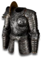

Set - Heyday
Kaldorn's Majesty
5 items, level 74

Firecam Gilded Plate
Ornate Plate
Defense: 417-450
Required Level: 63
+150-180% Enhanced Defense
+30-50% to All Resistances
+20% Faster Hit Recovery
(4 items) +50% to All Resistances

Axe of Arvoreen
Ogre Axe
Damage: 28-145 (two-handed)
Required Level: 70
+220-270% Enhanced Weapon Damage
+200-300 to Maximum Damage
+20% Increased Attack Speed
Socketed (1-3)

Windspar Mask
Spired Helm
Defense: 114-159
Required Level: 74
+15-25% Physical Damage Reduction
+155-185% Enhanced Defense
+40-50 to Life

Waterwyrd's Talon
War Gauntlets
Defense: 43-53
Required Level: 55
+40% Increased Attack Speed
+175-200% Enhanced Defense

Daystar Wrap
War Belt
Defense: 41-52
Required Level: 58
+175-200 to Life
+75-100 to Mana
Set bonuses
- 2 items: +1 to All Skills
- 3 items: +1 to All Skills
- 4 items: +1 to All Skills
Full set
- +5 to All Skills
- +25 to all Attributes
- +4% to Experience Gained
- +125% Chance Items Roll Magic or Better
- +125% Extra Gold from Monsters